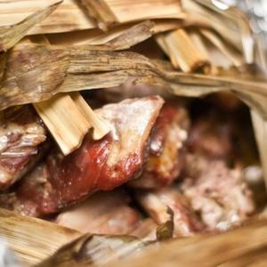

Chef Diary's
Home
Recipes
Recommended
Exit
Pandan Wrapped Roast Pork

Rate Me :)
Ingredients
14 pandan (screw pine) leaves
4 lbs pork butt or other well marbled cut of pork cut into large chunks
smoked sea salt